In this article, we are going to talk about adding new students to our model. To do that, we are going to need to put together
a few things:
Inside this file, add the following:
The 'fields' list just tells what attributes will participate in the form that we will see in a moment.
2. Setting up the URL
To set up the url, we will go to the students/urls.py file and add the following:
3. Declaring the view Go to students/views.py and add the following to declare the view for this view:
4. Designing the form
Even though the heading says 'designing' we are going to design a very basic one. Later in the tutorial, we will look how to use frameworks such as Bootstrap or Materialize to render the forms.
Create a file named 'stud-edit.html' in students/templates folder. Once created, add the following to the file:
*************** IMPORTANT ***************
enctype='multipart/form-data'
Please note the 'enctype' attribute added to the form. This is required whenever uploading media in your form. If you don't put this in the form, the pictures will not be uploaded for the model instance.
So, now try going to the address '127.0.0.1:8000/students/edit/' and what do you see?
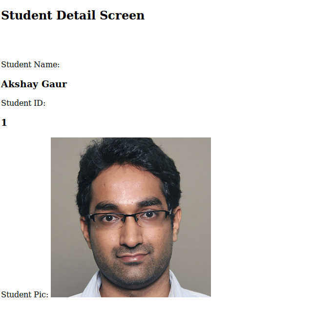
What is interesting here is that Django implements basic checks for you automatically. Such as checking all the required fields in the form are entered or not. For us, for example, entering the primary key for the student is very important. So, if I try to submit a form without entering the primary key, I get the following error:
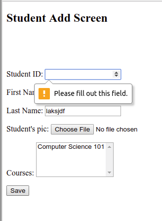
Isn't that nice?
So fill out all the details for this student and submit the form. What do you see?
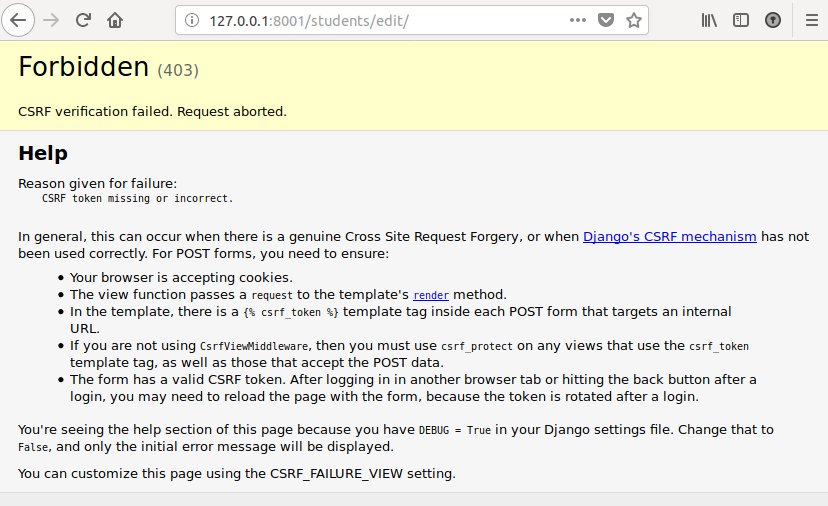
This is the CSRF handling that Django does for you automatically and is extremely handy feature of Django framework. This also ensures that we follow basic security protocols to keep our site safe from malicious agents.
To make sure that our site complies with Django's standards, we need to add {% csrf_token %} just after our <form> tag.
Now that we fixed that, let us enter some data in the form and try submitting again. Does the form submit the data correctly?
Here is what I get:
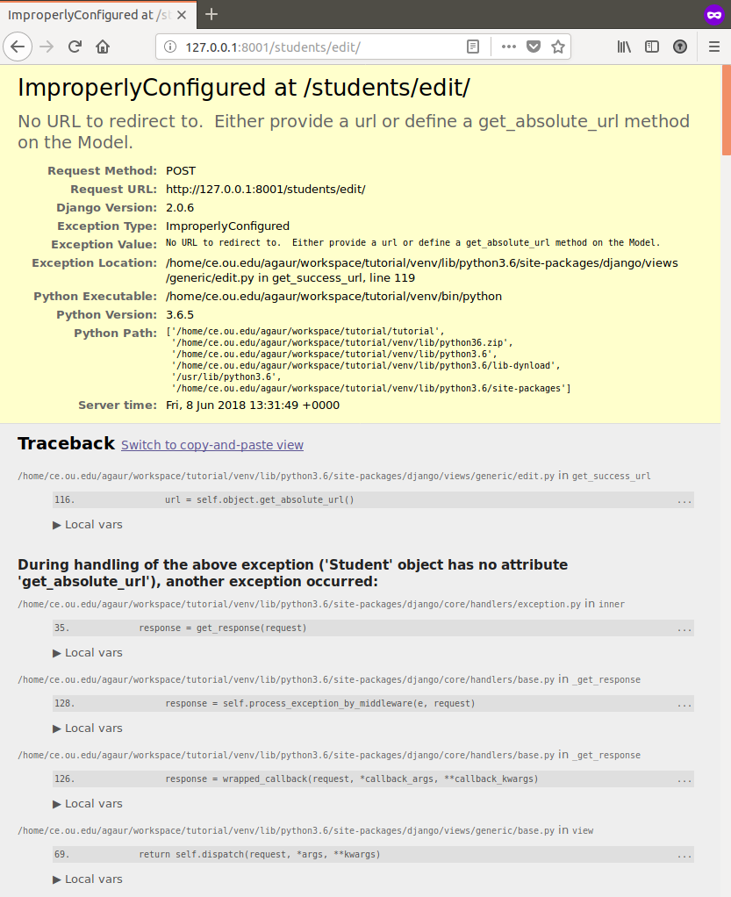
What this is tells us is that form has been submitted successfully, but it doesn't know which page to redirect to upon a successful submission of a form.
To confirm our understanding, let us go and check list of students at 127.0.0.1:8000/students/
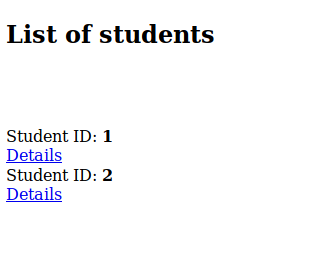
Yay! Our new student is in the system!! Let us look at the student's details by clicking on the Details link.
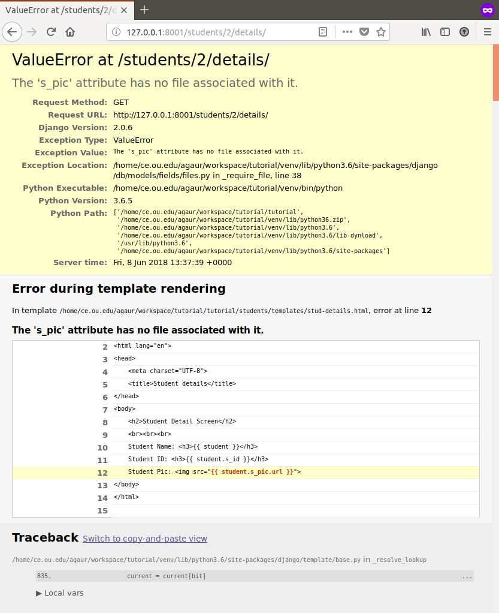
This tells us that this student doesn't have an image and because we try to display the student's pic using the {% student.s_pic.url %} Django tag when it doesn't exit, we get this error. You can think of this as being similar to a null value error in regular programming.
So now we need to fix two things:
This is fixed in multiple ways:
2. Handling the case when there is no image for the student
Here we can implement some basic validation in the template of ours like so:
Now try and see the details of any student that doesn't have a picture:

- A form that will specify what data is required for the creation of the student.
- A url that will be served for entering data for the new model.
- A view that will take an html template and render for the requestor.
- A template that will describe how to show the input fields that will be required for creation of the model.
1. Setting up the form
For this, we need to create a python file in the students directory named 'forms.py'. The directory after creating this file should look like:tutorial//
|-- assets//
| `-- media//
| `-- student_pics//
| `-- akshay.jpg
|-- manage.py*
|-- students//
| |-- admin.py
| |-- apps.py
| |-- forms.py <------------------THIS ONE RIGHT HERE
| |-- __init__.py
| |-- migrations//
| |-- models.py
| |-- templates//
| | |-- dept-details.html
| | |-- dept-list.html
| | |-- stud-details.html
| | |-- stud-list.html
| | `-- welcome.html
| |-- tests.py
| |-- urls.py
| `-- views.py
`-- tutorial//
|-- __init__.py
|-- settings.py
|-- urls.py
`-- wsgi.pyInside this file, add the following:
from django.forms import ModelForm
# Import models
from students.models import Student
class StudentForm(ModelForm):
"""
This is the modelfrom for the student.
"""
class Meta:
model = Student
fields = ['s_id', 's_first_name', 's_last_name', 's_pic', 'course']The 'fields' list just tells what attributes will participate in the form that we will see in a moment.
2. Setting up the URL
To set up the url, we will go to the students/urls.py file and add the following:
from django.urls import path
from students import views
urlpatterns = [
path('', views.WelcomeView.as_view(), name='welcome'),
path('depts/', views.DeptListView.as_view(), name='dept_list'),
path('depts/<str:pk>/details/', views.DeptDetailView.as_view(), name='dept_details'),
path('students/', views.StudentListView.as_view(), name='stud_list'),
path('students/<int:pk>/details/', views.StudentDetailView.as_view(), name='stud_details'),
path('students/edit/', views.StudentAddView.as_view(), name='stud_edit'),
]3. Declaring the view Go to students/views.py and add the following to declare the view for this view:
# import the generic views.
from django.views.generic import TemplateView, ListView, DetailView, CreateView
# import models
from students.models import Department, Student
# import forms
from students.forms import StudentForm
class StudentAddView(CreateView):
"""
This class utilizes the default class based
view provided by Django framework to add submitted
data to backend database.
"""
template_name = 'stud-edit.html'
model = Student
form_class = StudentForm4. Designing the form
Even though the heading says 'designing' we are going to design a very basic one. Later in the tutorial, we will look how to use frameworks such as Bootstrap or Materialize to render the forms.
Create a file named 'stud-edit.html' in students/templates folder. Once created, add the following to the file:
<!doctype html>
<html lang="en">
<head>
<meta charset="UTF-8">
<title>Student details</title>
</head>
<body>
<h2>Student Add Screen</h2>
<br><br><br>
<form method="POST" enctype="multipart/form-data">
{{ form.as_p }}
<button type="submit"> Save </button>
</form>
</body>
</html>*************** IMPORTANT ***************
enctype='multipart/form-data'
Please note the 'enctype' attribute added to the form. This is required whenever uploading media in your form. If you don't put this in the form, the pictures will not be uploaded for the model instance.
So, now try going to the address '127.0.0.1:8000/students/edit/' and what do you see?
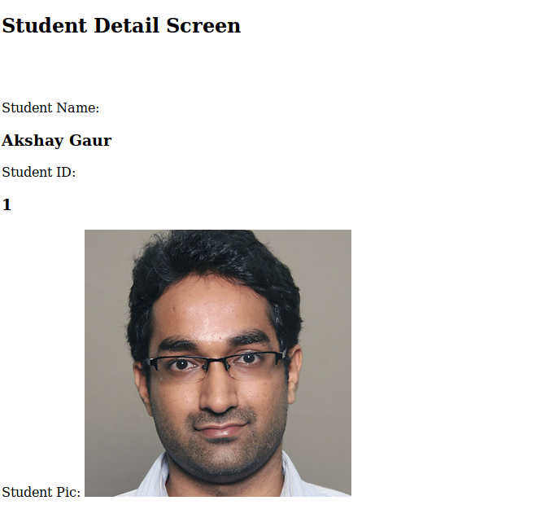
What is interesting here is that Django implements basic checks for you automatically. Such as checking all the required fields in the form are entered or not. For us, for example, entering the primary key for the student is very important. So, if I try to submit a form without entering the primary key, I get the following error:
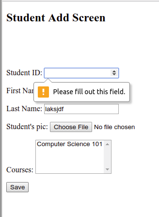
Isn't that nice?
So fill out all the details for this student and submit the form. What do you see?
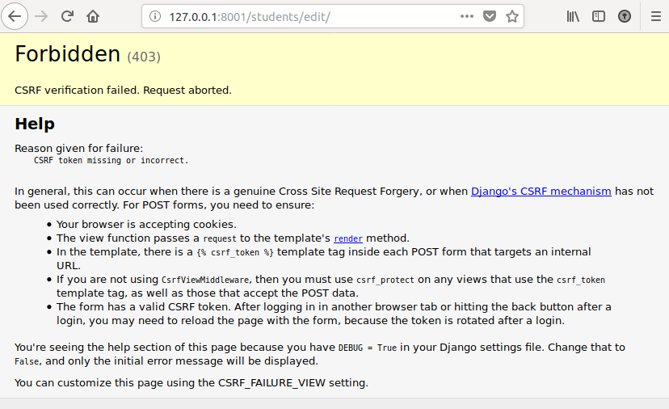
This is the CSRF handling that Django does for you automatically and is extremely handy feature of Django framework. This also ensures that we follow basic security protocols to keep our site safe from malicious agents.
To make sure that our site complies with Django's standards, we need to add {% csrf_token %} just after our <form> tag.
<!doctype html>
<html lang="en">
<head>
<meta charset="UTF-8">
<title>Student details</title>
</head>
<body>
<h2>Student Add Screen</h2>
<br><br><br>
<form method="POST" enctype="multipart/form-data">
<!-- Add this here -->
{% csrf_token %}
{{ form.as_p }}
<button type="submit"> Save </button>
</form>
</body>
</html>Now that we fixed that, let us enter some data in the form and try submitting again. Does the form submit the data correctly?
Here is what I get:
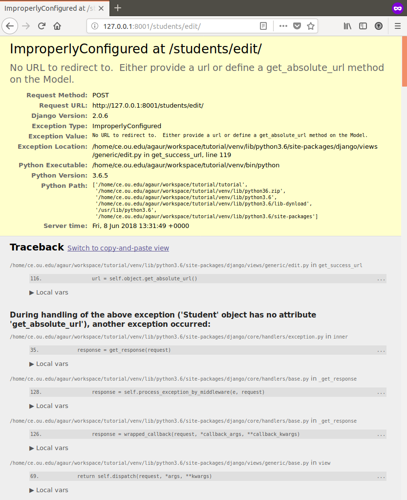
What this is tells us is that form has been submitted successfully, but it doesn't know which page to redirect to upon a successful submission of a form.
To confirm our understanding, let us go and check list of students at 127.0.0.1:8000/students/
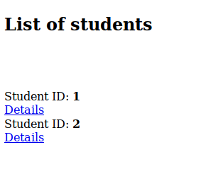
Yay! Our new student is in the system!! Let us look at the student's details by clicking on the Details link.
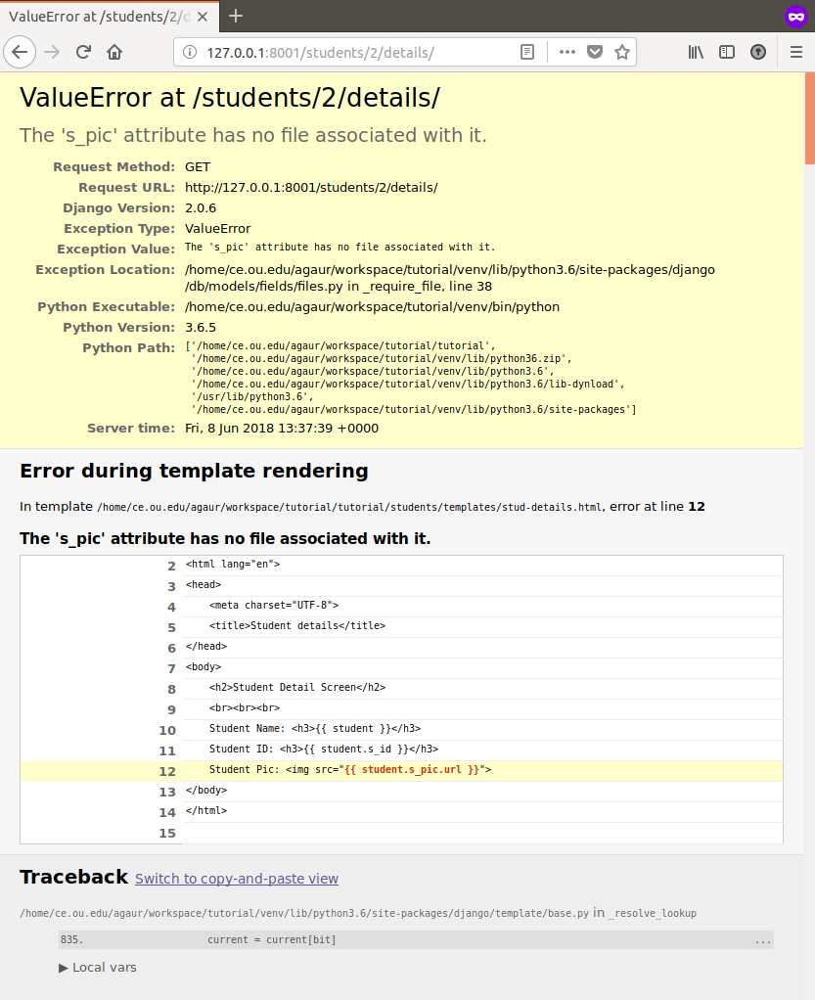
This tells us that this student doesn't have an image and because we try to display the student's pic using the {% student.s_pic.url %} Django tag when it doesn't exit, we get this error. You can think of this as being similar to a null value error in regular programming.
So now we need to fix two things:
- Redirect url on successful form submission
- Handling the case when there is no image for the student
This is fixed in multiple ways:
- Defining the success url in our view.
In our views.py, add the following to our existing code:#import reverse lazy from django.urls import reverse_lazy class StudentAddView(CreateView): """ This class utilizes the default class based view provided by Django framework to add submitted data to backend database. """ template_name = 'stud-edit.html' model = Student form_class = StudentForm # Use reverse lazy to create the url for our list view # the parameter is the named url in our urls.py file. success_url = reverse_lazy('stud_list')
If you remember in our urls.py file, we defined the /students/ url with a name='stud_list', we pass this to our success_url variable in our view. After doing this, when we submit a student form, we will be redirected to the url which has the name 'stud_edit'. Be careful and don't mix up your dashes and underscores and all will be fine ☺.
If all goes well, upon entering correct form data, you will see;
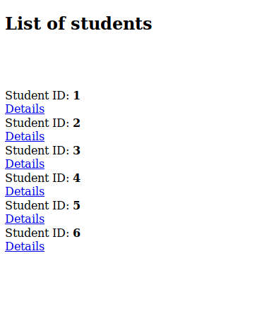
- Defining the get_absolute_url in our model. If we don't add the success_url in our view, Django by default tries
to show the added model instance on form submission. To view this model instance, it needs to know which url
displays the details of a model in our app.
So, we will define the get_absolute_url for our student model in students/models.py file.
Change the Student model in models.py file as below:
# Import reverse_lazy for get_absolute_url from django.urls import reverse_lazy class Student(models.Model): """ This model will store students' details. Primary key will be the students' id. """ class Meta: db_table = 'students' ordering = ['s_id'] s_id = models.IntegerField(primary_key=True, verbose_name="Student ID") s_first_name = models.CharField(max_length=200, verbose_name="First Name") s_last_name = models.CharField(max_length=200, verbose_name="Last Name") s_pic = models.ImageField(upload_to='student_pics', blank=True, verbose_name="Student's pic") course = models.ManyToManyField(Course, blank=True, verbose_name="Courses") def __str__(self): """ String representation of the student object. """ return "{0} {1}".format(self.s_first_name, self.s_last_name) def get_absolute_url(self): """ Returns the url to details for this object. :return: URL to display object details. """ return reverse_lazy('stud_details', kwargs={'pk': self.pk})
Now, assuming that success_url is not defined, when you again enter a student's details in the form and submit, you will see:
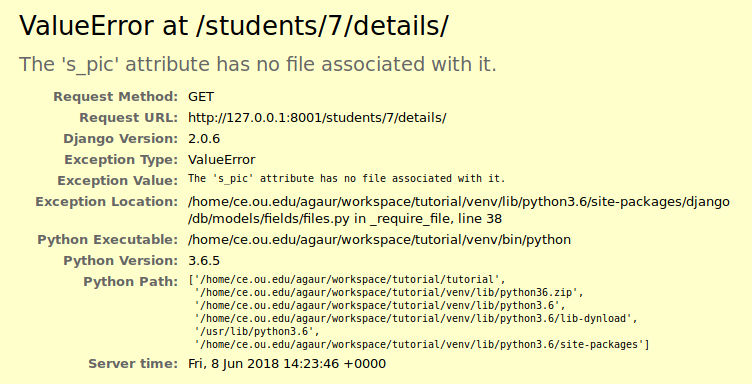
I have never seen a more beautiful error code! That is because we are being redirected to the student's detail page and we are getting this error only because it doesn't have a picture.
2. Handling the case when there is no image for the student
Here we can implement some basic validation in the template of ours like so:
<!doctype html>
<html lang="en">
<head>
<meta charset="UTF-8">
<title>Student details</title>
</head>
<body>
<h2>Student Detail Screen</h2>
<br><br><br>
Student Name: <h3>{{ student }}</h3>
Student ID: <h3>{{ student.s_id }}</h3>
Student Pic:
<!-- Basic validation in templates -->
{% if student.s_pic %}
<img src="{{ student.s_pic.url }}">
{% else %}
<i> No picture uploaded. </i>
{% endif %}
</body>
</html>Now try and see the details of any student that doesn't have a picture: